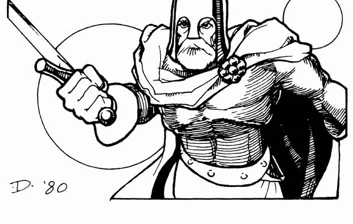

帕拉米德斯、佩林诺尔与特里斯坦
帕拉米德斯爵士是中立的 16 级战士，AC 2、生命值 93，擅长复合弓；佩林诺尔王是守序中立的 12 级战士，AC −2、生命值 65，被命运驱使追逐独角兽般的“求索兽”。特里斯坦爵士是中立的 17 级战士，AC −3、生命值 120，战斗技巧仅次于兰斯洛特，却因伊索德与马克王的关系而陷入悲剧。

帕拉米德斯爵士是中立的 16 级战士，AC 2、生命值 93，擅长复合弓；佩林诺尔王是守序中立的 12 级战士，AC −2、生命值 65，被命运驱使追逐独角兽般的“求索兽”。特里斯坦爵士是中立的 17 级战士，AC −3、生命值 120，战斗技巧仅次于兰斯洛特，却因伊索德与马克王的关系而陷入悲剧。
